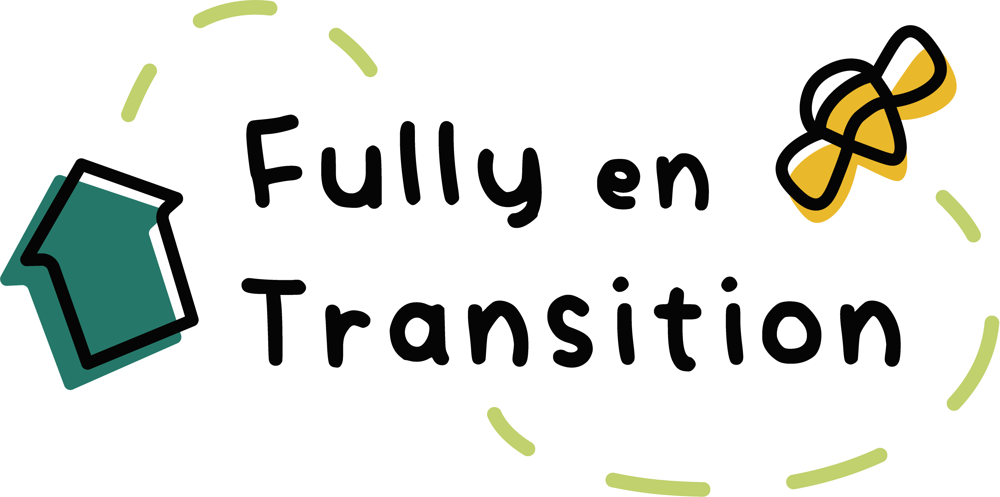
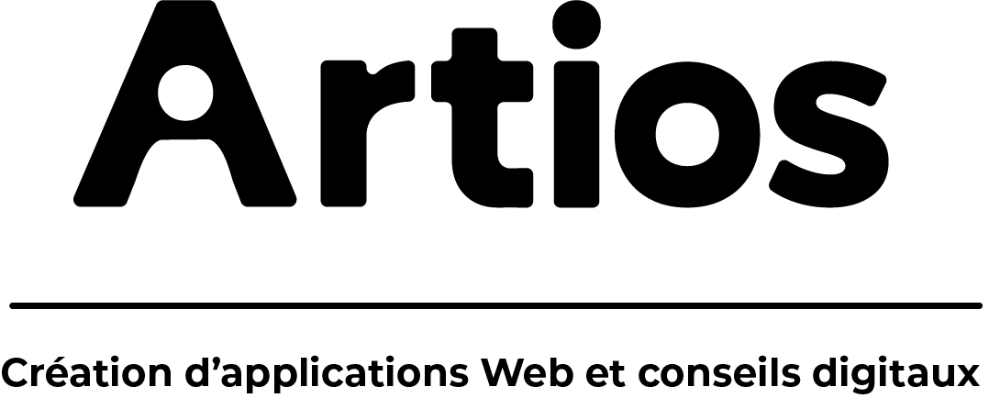

Curriculum Vitae
Formations
-
2023-2026
Bachelor en Ingénierie des Médias
Haute Ecole d'Ingénierie et de Gestion du Canton de Vaud
-
2019-2023
Bachelor en Lettres
En français médiéval et philosophie, Université de Lausanne
-
2018-2019
Année propédeutique
Haute-école d'Art et de Design du Valais
Expériences professionnelles
-
2025
Développeuse full-stack
Avalia Systems, Yverdon-les-Bains
Pour une durée de 6 semaines, j'ai travaillé en tant que développeuse full-stack où j'ai eu l'occasion d'apprendre et mettre en pratique les connaissances acquises durant mes formations.
-
2023
Stagiaire en marketing
Groupe R Management, Fribourg
Durant ce stage de 5 mois, j’ai acquis les bases des compétences en communication interne et externe.
- Design Graphique et montage vidéo
- Gestion des réseaux sociaux : création de contenu, planification, analyse
- Gestion des newsletters : création de contenu, planification, analyse
- Gestion des sites web : création de contenu, SEO
-
2016-2018
Animatrice en médiation culturelle
L'Éprouvette, Université de Lausanne
Durant les deux dernières années de mon bachelor en Lettres, j’ai été engagée pour développer un jeu de cartes pour le département de médiation culturelle de l’Université.
- Recherches scientifiques
- Design du jeu de cartes
- Médiation et présentation du jeu au grand public
Compétences
- Français : Langue maternelle
- Anglais : Courant (C1)
- Allemand : Intermédiaire (Diplôme B2)
Techniques
HTML, CSS, Tailwind CSS, JavaScript, Laravel, PHP, Java, SQL, Vite, Vue, React, TypeScript
Logiciels
Figma, Photoshop, Illustrator, InDesign, WordPress, Notion, Trello, Miro
Interpersonnelles
Travail en équipe, gestion de projet, créativité, capacités rédactionnelles
Langues
Projets
-
2024-2025
Élaboration de l'identité visuelle, de la charte graphique et du site web de l'association Fully en Transition dont je suis également membre.
-
2024-2025
Élaboration de l'identité visuelle, de la charte graphique et des maquettes du site de l'entreprise Artios.
Contact
Je suis ouverte à toutes discussions !
Vous pouvez me contacter via l'addresse mathilde@ancay.ch